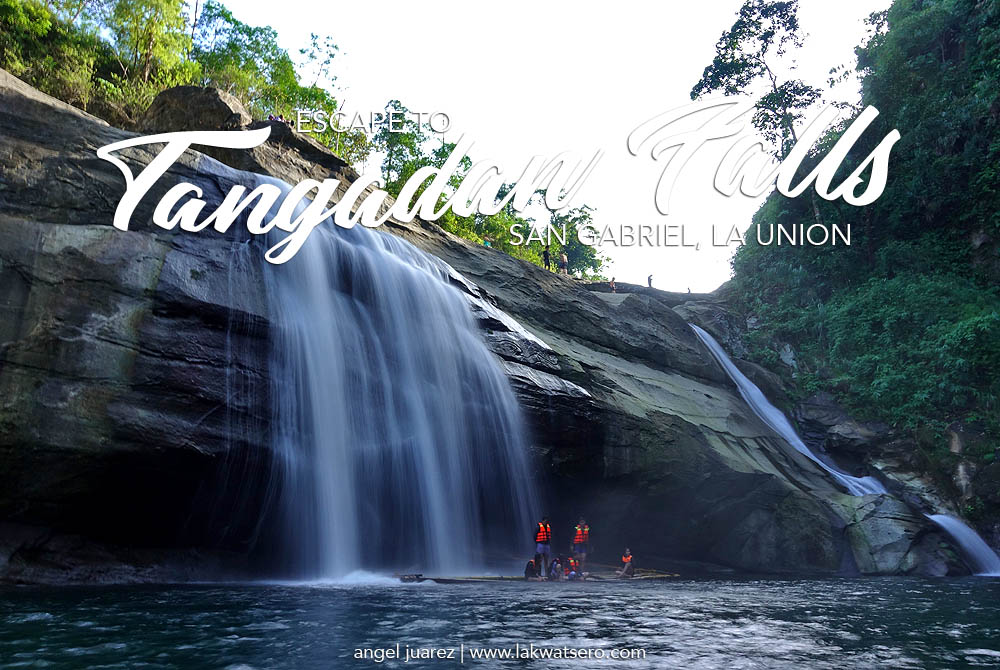
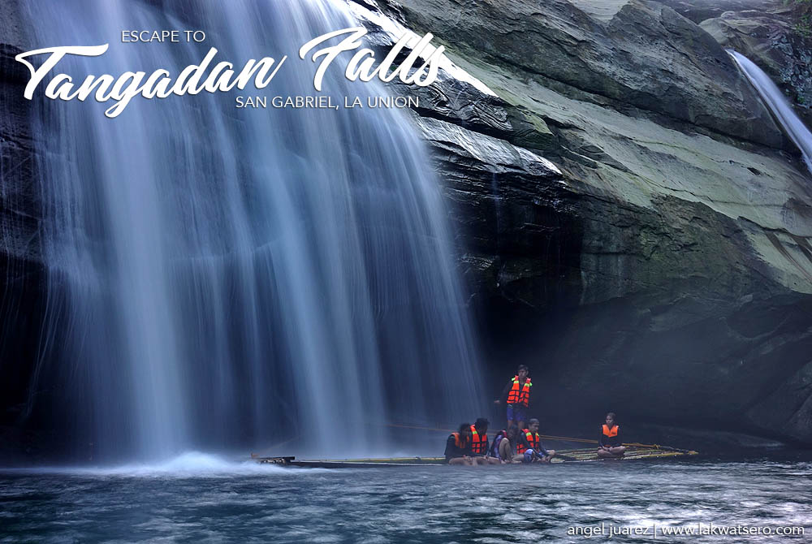
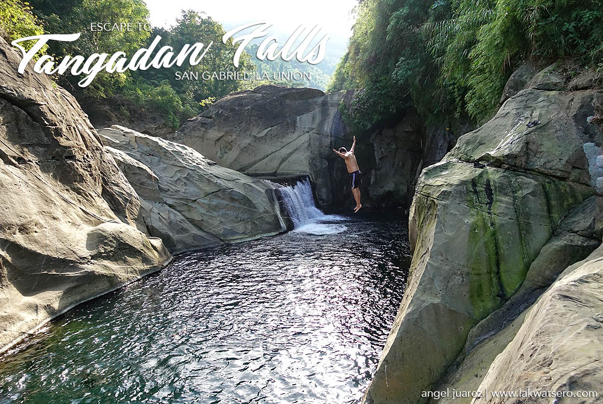
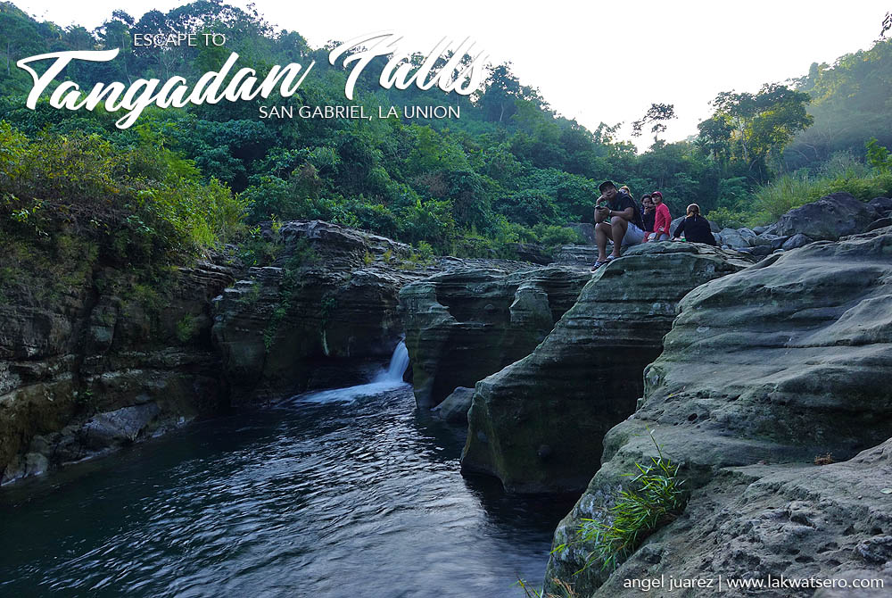

Tangadan Falls: The Majestic Cascade of San Gabriel, La Union
The archipelago of 7,107 islands that make up the Philippines is blessed with unparalleled natural wonders that truly beckon. Visayas is known for its beautiful beaches. Mindanao to some of the country’s majestic waterfalls. The Northern Luzon province of La Union, on the other hand, is home to both – beautiful beaches and majestic waterfalls such as Tangadan Falls.
Situated in the town of San Gabriel, Tangadan Falls is one of at least ten waterfalls in the town. The waterfall is a two-tier cascade along Baroro River with cold water emanating from the hinterland of the province adjacent to the Cordillera Mountain Range.
The lower cascade of Tangadan Falls is its main icon. Towering at around 50 feet and width of about 100 feet, it has a deep natural catch basin perfect for quick dip. The upper level has a smaller drop but bigger and deeper pool ideal for cliff jumping. Further upstream is Kapandagan Falls, an offbeat yet equally majestic waterfalls that requires at least an hour more of trekking. With the town of San Gabriel just 20-minute ride from the surfing town of San Juan, Tangadan Falls is a perfect side trip after surfing the waves of La Union. Entrance fee is just P30 per person.
Gallery